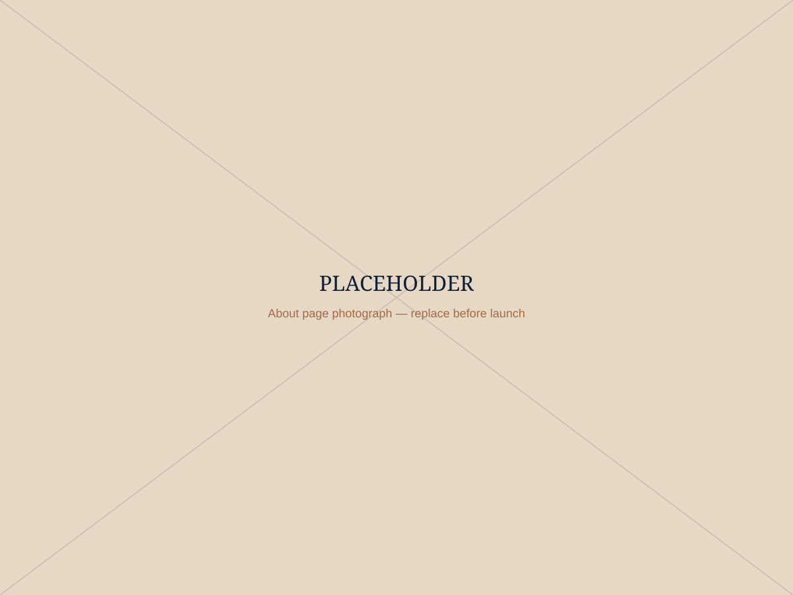

About
I don’t just teach resilience. I’ve had to rebuild mine.
Every idea in The L.A.U.G.H.T.E.R. Method® has been tested somewhere it mattered most: in my own life. Here’s why that matters for you.

From surviving to thriving, and teaching others to do the same
A few years ago, illness took me out of the rooms I loved being in (the stages, the workshops, the conversations that light me up). Coming back taught me things about resilience that no textbook could: that it isn’t about pretending to be fine, and it isn’t a straight line. It’s a practice, rebuilt one small, sometimes funny, moment at a time.
That’s the resilience I bring into every keynote and workshop now, not theory borrowed from a textbook, but something road-tested in my own life and shaped into a method any team, leader or reader can actually use.
Philosophy
Three things I believe about resilience
Resilience is a skill, not a personality trait
Which means it can be taught, practised and strengthened, in a single workshop or over a lifetime.
Laughter is a nervous system reset, not a distraction
Used well, it’s one of the fastest ways to shift a room, a team or a mind out of survival mode.
Coming back is not the same as bouncing back
Real resilience makes room for what was hard, then builds something sturdier from it, that’s what I help people do.
Featured In